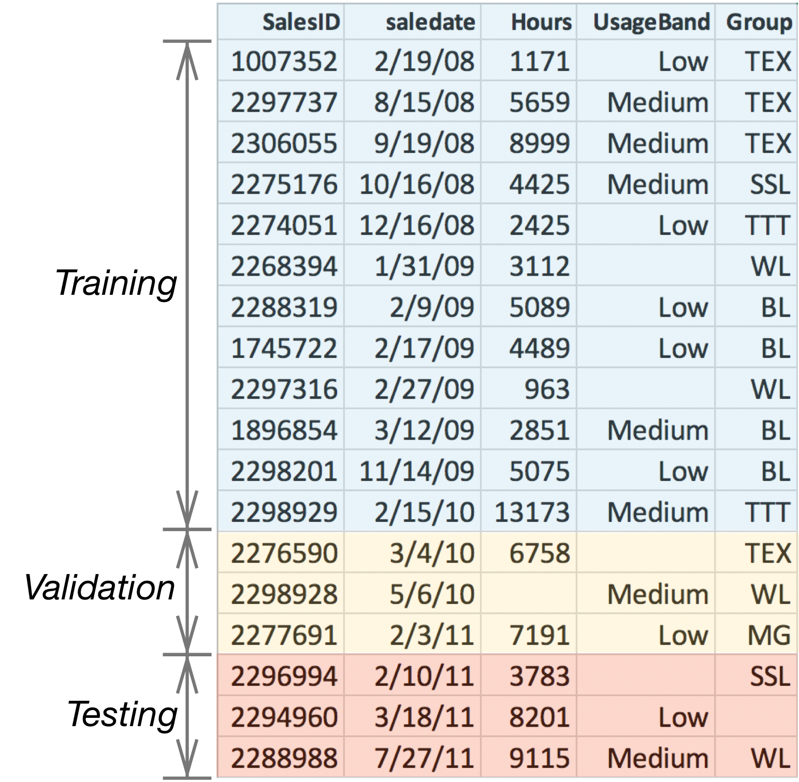
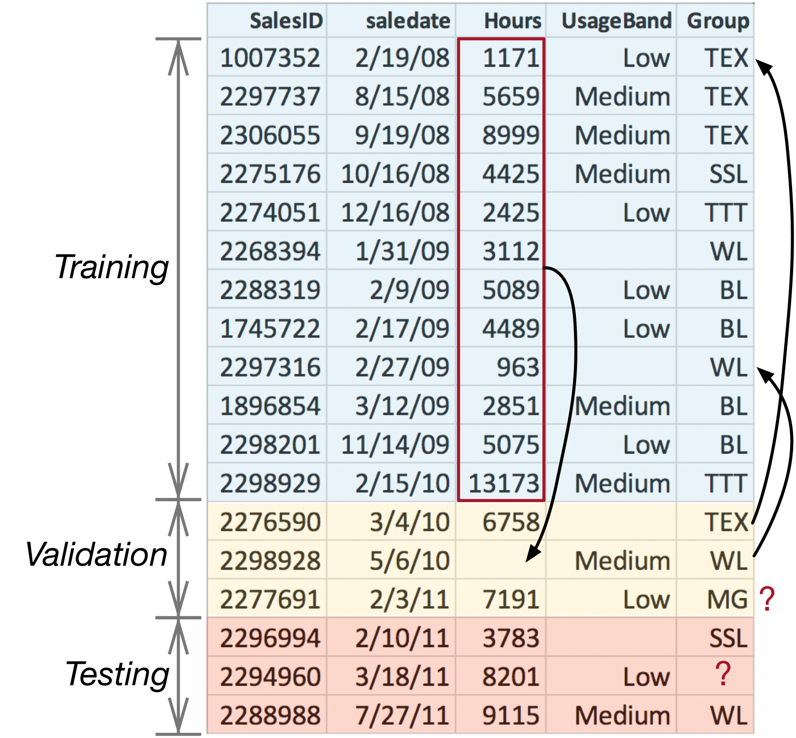
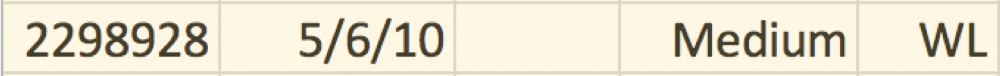
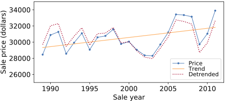
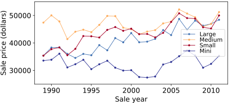

9 Train, Validate, Test
Terence Parr and Jeremy Howard
Copyright © 2018-2019 Terence Parr. All rights reserved.
Please don't replicate on web or redistribute in any way.
This book generated from markup+markdown+python+latex source with Bookish.
You can make comments or annotate this page by going to the annotated version of this page. You'll see existing annotated bits highlighted in yellow. They are PUBLICLY VISIBLE. Or, you can send comments, suggestions, or fixes directly to Terence.
Being able to properly measure the accuracy of a model is a critical skill for a machine learning practitioner, and the goal of this chapter is to acquire that skill by applying it to our bulldozer dataset. Evaluating the accuracy of a model requires two key elements:
- a metric that quantifies accuracy between predicted and true values
- a set of observations outside of the training data whose predictions are tested by the metric
Models that perform poorly on training data will never generalize well to data they have never seen. Models that perform well on training data might or might not generalize well.
Section 5.2 Training and evaluating an initial model introduced the  and MAE (mean absolute value) metrics, and we'll explore more metrics in Chapter 11 Measuring regression model performance. In Section 3.2.4 Checking model generality, we separated validation data from training data because we care about a model's performance on future observations, not how well it does on its own training data.
and MAE (mean absolute value) metrics, and we'll explore more metrics in Chapter 11 Measuring regression model performance. In Section 3.2.4 Checking model generality, we separated validation data from training data because we care about a model's performance on future observations, not how well it does on its own training data.
Keeping separate training and validation sets can be a hassle, though, as we'll see in this chapter. To avoid the hassle so far, we've been using the RF model's handy OOB (out-of-bag) samples as a substitute for a validation set. In general, accuracy metrics derived from the OOB samples are excellent estimates of the true validation scores but only for time-insensitive data.
2Linear regression models, on the other hand, do assume a linear relationship between features and price, which allows them to extrapolate.
Time-sensitive datasets, such as the bulldozer dataset, can look very different depending on the time period. Inflation alone means that future prices far beyond the training period will be much higher. An RF bulldozer price predictor trained on data from years 2000-2005 won't make accurate predictions for bulldozers sold in 2020. Metrics derived from OOB samples are, therefore, overly optimistic about the generality of a model and how it will perform on future predictions. Per Section 3.4.3 Comparing the digit classifier's performance to a linear model, RF models make no assumption about the underlying relationship between features and target variable, which means that RFs cannot extrapolate beyond the range of their training experience.2 See also Rachel Thomas' How (and why) to create a good validation set article.
That means we must obtain a validation set beyond the date range of the training set in order to properly measure an RF's accuracy on time-sensitive data. We'll kick off this chapter by splitting off a validation set in Section 9.1 The testing trilogy. Unfortunately, measuring accuracy with a separate validation set triggers a bit of unpleasantness, which we'll experience in Section 9.2 Rectifying training and validation sets. In a nutshell, we have to make sure that categories in training and validation sets use the same encoding and that missing numeric values are filled in with medians computed only from the training set. Once we have a useful measure of accuracy via the validation set, we'll tune our model to improve its accuracy and generality in Section 9.3 Tuning a Random Forest model.
The final step in our model development process is to evaluate the performance of the model on a test set, which we'll do in Section 9.4 Getting a true measure of generality. The test set is outside of the training set, like the validation set, but must be hidden away and never run through intermediate models. The metric reported by this final test is the only objective estimate of a model's generality.
9.1 The testing trilogy
The only true measure of model generality comes from computing metrics on a test set that has never previously been run through the model.
Developing a machine learning model requires three sets of observations: training, validation, and test sets. The model trains just on the training set and model accuracy is evaluated using the validation set during development. After tuning the model on the validation set, we run the test set through the model to get our final measure of model accuracy and generality. If we peek at the test set and run it through an intermediate model rather than our final model, the test set becomes just another validation set. Every change made to a model after testing it on a dataset, tailors the model to that dataset; that dataset is no longer an objective measure of generality.
To develop a model in practice, we're usually given a single dataset, rather than separate training, validation, and test sets. That means we need a general procedure for splitting datasets appropriately.
9.1.1 Splitting time-insensitive datasets
For datasets that do not change significantly over the time period of interest, we want to extract validation and test sets using random sampling of records. This is called the holdout method. To get (roughly) 70% of dataframe df into training and 15% into both validation and test sets, we can do this:
from sklearn.model_selection import train_test_split
df = df.sample(frac=1) # shuffle data
df_dev, df_test = train_test_split(df, test_size=0.15)
df_train, df_valid = train_test_split(df_dev, test_size=0.15)
Note: Squirrel away the df_test testing subset in a vault for a single use during final testing.
After training a model using df_train, we'd run df_valid data through the model and compute a metric, such as . Then we'd tune the model so that it's more accurate on df_valid data. When we're happy with the model, we'd finally use df_test to measure generality.
Because we're selecting validation and test sets randomly, it's possible that the sets will contain a disproportionate number of outlier records, such as really expensive bulldozers. Such tests are not representative and yield pessimistic accuracy metrics. Running the split-train-validate sequence in a loop, would extract different subsets each time and the resulting accuracy metrics would fluctuate. (Note that only the highlighted train_test_split() line would be part of the loop; never recompute df_test.) A good strategy then would be to take the average accuracy metric over several runs.

Figure 9.1. Illustration of 3-fold cross validation training on two (blue) chunks, testing on the third (orange) until the model computes an accuracy metric for all three chunks
A slight variation on this procedure is called k-fold cross validation and splits the dataset into k chunks of equal size. We train the model on k-1 chunks and test it on the other, repeating the procedure k times so that we every chunk gets used as a validation set, as shown in Figure 9.1. The overall validation error is the average of the k validation errors. Here's how to use sklearn for 5-fold cross validation using an RF model:
from sklearn.model_selection import cross_val_score
rf = RandomForestRegressor(...)
scores = cross_val_score(rf, X, y, cv=5) # k=5
print(scores.mean())
Cross validation and repeated subsampling are excellent techniques for measuring model accuracy, but are unsuitable for time-sensitive datasets.
9.1.2 Splitting time-sensitive datasets
When observation features or target variables change meaningfully over time, random extraction of validation sets isn't appropriate. Randomly splitting a dataset would yield training and validation sets that overlap in time. That's a problem because it allows the model to train on data from the future and validation metrics would be overly optimistic. Imagine how your model would be used in practice. At some point, you must train a model on the data you have and then deploy it. Any observations subsequently submitted to the model for prediction are necessarily from dates beyond the end of the data used to train the model. Training should always mimic deployment and so our validation set should be from dates beyond the end of the training set.
The process for extracting training, validation, and test sets for time-sensitive data is:
- Sort the records by date, earliest to latest
- Extract the last, say, 15% of the records as df_test
- Extract the second to last 15% of the records as df_valid
- The remaining 70% of the original data is df_train
For example, Figure 9.2 illustrates the splitting process for a toy dataset derived from the bulldozer dataset where the records have been sorted from 2/19/08 to 07/27/11. Keep in mind that our final model will be tested on df_test but trained on the combined data in training and validation sets.

Figure 9.2. Sorting and splitting time-sensitive data for testing
For the real bulldozer dataset, Kaggle provides a training set with 401,126 records and a validation set with 11,574 records. Because we need three datasets, let's use the provided validation set as our testing set and split off 12,000 records from the end of the training set as our validation set. What remains is our training set. Here are the nonoverlapping date ranges:
| Subset | Start date | End date | Number of records |
| Training | 1989-01-17 | 2011-08-19 | 389,126 |
| Validation | 2011-08-19 | 2011-12-30 | 12,000 |
| Testing | 2012-01-01 | 2012-04-28 | 11,574 |
If you look in prep-bulldozer.py in the data directory, you'll see code similar to the following that separates the original Kaggle training set into training and validation sets:
df = df.sort_values('saledate')
n_valid = 12000 # same as Kaggle's test set size
n_train = len(df)-n_valid
df_train = df[:n_train].reset_index(drop=True)
df_valid = df[n_train:].reset_index(drop=True)
9.2 Rectifying training and validation sets
In an ideal world, datasets would be purely numeric and without missing values. Feature engineering would still be useful, but numericalizing data such as encoding categorical variables, wouldn't be necessary. And we wouldn't have to conjure up missing values. Alas, real-world datasets are full of categorical variables and riddled with missing values, which introduces synchronization issues between training and validation/test sets. Figure 9.2 illustrates a number of potential hazards:
- If category TEX in column UsageBand is encoded as integer value 1 in the training set, the validation and test set must use the same encoding of 1.
- Missing categorical values should be encoded as integer 0 in all sets.
- Missing numeric values in column Hours should be filled with the median of just those values from Hours in the training set.
- Categorical values in validation or test sets not present in the training set, such as MG in column Group, should be encoded as integer 0; the model has never seen MG, so we encode such values as if they were missing.
We can abstract that list into these important rules for preparing separated training and test sets:
- Transformations must be applied to features consistently across data subsets.
- Transformations of validation and test sets can only use data derived from the training set.
To follow those rules, we have to remember all transformations done to the training set for later application to the validation and test sets. In practice, that means tracking the median of all numeric columns, all category to category-to-code mappings, and which categories were one-hot encoded. Special care is required to ensure that one-hot encoded variables use the same name and number of columns in the training and testing sets. It sounds simple enough, but it's easy to screw up the synchronization between training and testing sets. Synchronization bugs usually show up as poor model accuracy, rather than as something obvious like a program exception.
9.2.1 Preparing the training set
Over the last two chapters, we've worked purely on the bulldozer training set to clean, encode, and perform feature engineering. Now, it's time to learn how to correctly prepare separate training and validation sets. We'll prepare the data as we did before, but will also track the data transformations that we perform. Then, we can apply those transformations to the validation set. We'll reuse as many functions as we can from the previous chapters, but some functions will require some updates and we'll organize some of the code snippets into new functions. You can find all the code from this chapter in the auto-generated notebook.
To get started, cut-and-paste the common set of import statements used in the last chapter into a new notebook. Then, copy in functions test(), fix_missing_num(), extract_sizes(), df_normalize_strings(), df_cat_to_catcode(), and df_split_dates(). Now, let's encapsulate all of the cleanup work that we did in Chapter 7 Exploring and Cleaning the Bulldozer Dataset into a clean() function for use on validation and test sets later:
def clean(df):
del df['MachineID'] # dataset has inconsistencies
del df['SalesID'] # unique sales ID so not generalizer
df['auctioneerID'] = df['auctioneerID'].astype(str)
df_normalize_strings(df)
extract_sizes(df, 'Tire_Size')
extract_sizes(df, 'Undercarriage_Pad_Width')
df.loc[df['YearMade']<1950, 'YearMade'] = np.nan
df.loc[df.eval("saledate.dt.year < YearMade"), 'YearMade'] = \
df['saledate'].dt.year
df.loc[df.eval("MachineHoursCurrentMeter==0"),
'MachineHoursCurrentMeter'] = np.nan
In Chapter 8 Bulldozer Feature Engineering, we ordinal encoded ProductSize:
def df_order_product_size(df):
sizes = {np.nan:0, 'mini':1, 'compact':1, 'small':2, 'medium':3,
'large / medium':4, 'large':5}
df['ProductSize'] = df['ProductSize'].map(sizes).values
and one-hot encoded features Hydraulics_Flow and Enclosure. Here's a generic function to one-hot encode categorical variables:
def onehot(df, colname):
ascat = df[colname].astype('category').cat.as_ordered()
onehot = pd.get_dummies(df[colname], prefix=colname, dtype=bool)
del df[colname]
df = pd.concat([df, onehot], axis=1)
# return altered dataframe and column training categories
return df, ascat.cat.categories
Feature fiProductClassDesc has lots of interesting information that we split into four new features:
def split_fiProductClassDesc(df):
df_split = df.fiProductClassDesc.str.split(' - ',expand=True).values
df['fiProductClassDesc'] = df_split[:,0]
df['fiProductClassSpec'] = df_split[:,1] # temporary column
pattern = r'([0-9.\+]*)(?: to ([0-9.\+]*)|\+) ([a-zA-Z ]*)'
spec = df['fiProductClassSpec']
df_split = spec.str.extract(pattern, expand=True).values
df['fiProductClassSpec_lower'] = pd.to_numeric(df_split[:,0])
df['fiProductClassSpec_upper'] = pd.to_numeric(df_split[:,1])
df['fiProductClassSpec_units'] = df_split[:,2]
del df['fiProductClassSpec'] # remove temporary column
As we did with the cleanup procedure, let's encapsulate our feature engineering work into a function because we'll need to reuse this function on different amounts of training data later:
def feature_eng(X): # for later use
df_split_dates(X, 'saledate')
df_order_product_size(X)
split_fiProductClassDesc(X)
X, hf_cats = onehot(X, 'Hydraulics_Flow')
# normalize categories first then one-hot encode
X['Enclosure'] = X['Enclosure'].replace('erops w ac', 'erops ac')
X['Enclosure'] = X['Enclosure'].replace('no rops', np.nan)
X, enc_cats = onehot(X, 'Enclosure')
catencoders = {'Hydraulics_Flow':hf_cats,
'Enclosure':enc_cats}
return X, catencoders
It's easy enough to remember to one-hot Hydraulics_Flow and Enclosure later when working on the validation set, but we still need to track the training categories. If the categories in training and validation sets were identical, we wouldn't need to track anything; we could just apply onehot() to the validation set. If, however, the validation set contained a category not in the training set, we'd get a different number of columns in the validation set than in the training set. Before one-hot encoding, we have to line up the categories from training and validation. More on this shortly.
After cleanup and feature engineering comes the “numericalization” phase, which fixes any missing values and uses our default label encoding of categorical variables to remove any remaining non-numeric values. That means tracking the median of all numerical columns and recording the label encodings.
Rather than manually identifying numeric columns, we can ask Pandas via is_numeric_dtype(), which gives us a generic mechanism for replacing missing values in numeric columns and recording their medians:
def df_fix_missing_nums(df:pd.DataFrame) -> dict:
medians = {} # column name to median
for colname in df.columns:
if is_numeric_dtype(df[colname]):
medians[colname] = df[colname].median(skipna=True)
fix_missing_num(df, colname)
return medians
You might be wondering why we're creating _na columns even if a numeric training column has no missing values. The reason is that we have to be prepared to handle missing data in the validation or test sets, which would require _na columns. A RF model won't be confused by a column full of False values, so it's safe to inject columns that end up being superfluous.
For our dataset, the return value of df_fix_missing_nums() looks like:
{'ModelID': 4642.0,
'datasource': 136.0,
'YearMade': 2002.0,
'MachineHoursCurrentMeter': 3290.0,
'saledate': 1.2511584e+18,
...}
To apply label-encoding transformations consistently across training and validation sets, we have to update df_string_to_cat() from the Chapter 7 Exploring and Cleaning the Bulldozer Dataset to return a dictionary mapping a column name to the category index. The key functionality from Pandas is df[colname].cat.categories:
def df_string_to_cat(df:pd.DataFrame) -> dict:
catencoders = {}
for colname in df.columns:
if is_string_dtype(df[colname]) or is_object_dtype(df[colname]):
df[colname] = df[colname].astype('category').cat.as_ordered()
catencoders[colname] = df[colname].cat.categories
return catencoders
Here's an example of the categories stored in the dictionary at catencoders['Ripper']:
Index(['multi shank', 'single shank', 'yes'], dtype='object')
With those functions in place, we can encapsulate the numericalization phase with a wrapper function:
def numericalize(X, catencoders):
medians = df_fix_missing_nums(X)
e = df_string_to_cat(X)
catencoders.update(e)
df_cat_to_catcode(X)
return medians
At this point, we have functions that apply our cleanup, feature engineering, and numericalization procedures. Let's load our raw data and grab the last 100,000 records:
df = pd.read_feather("data/bulldozer-train.feather")
df = df.iloc[-100_000:] # same 100,000 records as before
X, y = df.drop('SalePrice', axis=1), df['SalePrice']
Then, our complete preparation procedure for the training records boils down to this simple sequence:
y = np.log(y)
clean(X)
X, catencoders = feature_eng(X)
medians = numericalize(X, catencoders)
Variables medians and catencoders track the information we need to consistently apply our transformations to the validation and test sets. We also need to remember that we one-hot encoded Hydraulics_Flow and Enclosure.
Once we're sure all columns are numeric and that there are no missing values, we can train a model.
rf, r2_train = test(X, y, n_estimators=150)
OOB R^2 0.91907 using 14,865,112 tree nodes with 45.0 median tree height
That metric computed from OOB samples is about the same that we saw at the end of the last chapter, which is a good sanity check. Since the OOB samples are within the same date range as the training samples, the OOB metric is overly optimistic. To get a better estimate of model generality, we really need a validation set.
9.2.2 Preparing consistent training and validation sets
To evaluate our model using a validation set, we need to load the raw validation data and then transform it as we did with the training set. The key difference is that we can only use data from the training set to label encode categories and fix missing values in the validation set, which we've saved in variables catencoders and medians. Models should never be trained on future data because that's a form of data leakage. Part of the answer would have leaked into the training data.
This is a very subtle point so it's worth emphasizing the potential hazards by annotating Figure 9.2, as shown in Figure 9.3.

Figure 9.3. Hazards in split training and test subset
The missing Hours value in the validation set should be replaced with the median of the Hours values from just the training set. When tested in production on a set of future records, we won't be retraining the model using those future records. Therefore, to get an accurate picture of future performance, no data from validation or test sets should ever be used in training the model.
And, we certainly shouldn't replace the missing value in the validation set with just the median of the validation data (6758 and 7191). One way to highlight the medians data leakage issue is to imagine testing a single future record with a missing value:

When there are literally no other Hours values with which to compute a median, our only choice is to compute the median from the training data alone. Here's a function to fill in missing values using medians from the training data:
def df_fix_missing_test_nums(df_test, medians):
for colname in medians:
df_test[colname+'_na'] = pd.isnull(df_test[colname])
df_test[colname].fillna(medians[colname], inplace=True)
After missing numeric values, the next big hazard is inconsistent label encoding across training and validation sets. Consistency requires:
- Each category must be encoded as the same numeric category code across all training and test sets.
- Missing category values, in any set, must end up as integer code 0.
- Categories found in test sets but not in the training set must be encoded as missing values, and ultimately as code 0.
The following function transforms all categorical variables according to those consistency rules, using the category indexes from the training set.
def df_apply_cats(df_test:pd.DataFrame, catencoders:dict):
for colname,encoder in catencoders.items():
# encode with categories from training set
df_test[colname] = \
pd.Categorical(df_test[colname],
categories=encoder, ordered=True)
After calling this function, missing category values in training and validation sets will be np.nan values, which will become zeros after we call df_cat_to_catcode() during the final numericalization step.
Ensuring consistent one-hot encoding is another, related, hazard. The name and number of columns in the training and validation sets must be the same. This consistency is only a problem if there are categories in the validation set that are unknown to the training set. Such unknown categories should be encoded as missing values in the validation set, as we saw in the CS/Math/Physics example from Section 8.3 One-hot encoding Hydraulics_Flow. The model has no experience with that category, so we lump it together with missing values.
To ensure consistency, we just have to apply the training category index for column x to the validation set column x before one-hot encoding it:
def onehot_apply_cats(df_test, colname, catencoders):
df_test[colname] = \
pd.Categorical(df_test[colname],
categories=catencoders[colname],
ordered=True)
onehot = pd.get_dummies(df_test[colname], prefix=colname, dtype=bool)
del df_test[colname]
df_test = pd.concat([df_test, onehot], axis=1)
del catencoders[colname] # simplify df_apply_cats()
return df_test
The reason that we delete the category index from catencoders is to simplify the loop in df_apply_cats(). That function does not have to test if colname in df_test to avoid an indexing exception from df_test[colname]. (The original categorical column x will not be in df_test after one-hot encoding.)
To perform feature engineering on the validation set, we split dates, encode the product size, and split apart the product description as we did before. The only difference is how we apply the one-hot encoding:
def feature_eng_test(df_test, catencoders):
df_split_dates(df_test, 'saledate')
df_order_product_size(df_test)
split_fiProductClassDesc(df_test)
df_test = onehot_apply_cats(df_test, 'Hydraulics_Flow', catencoders)
df_test['Enclosure'] = df_test['Enclosure'].replace('erops w ac', 'erops ac')
df_test['Enclosure'] = df_test['Enclosure'].replace('no rops', np.nan)
df_test = onehot_apply_cats(df_test, 'Enclosure', catencoders)
return df_test
To numericalize the validation set, we apply categories with df_apply_cats() instead of calling df_string_to_cat(), use medians from the training set to fix any missing values, and then do the usual category-to-code conversion:
def numericalize_test(df_test:pd.DataFrame, medians:dict, catencoders:dict):
df_apply_cats(df_test, catencoders)
df_fix_missing_test_nums(df_test, medians)
df_cat_to_catcode(df_test)
Program defensively
Machine learning models are difficult to debug because bugs often only show up as fluctuations in model accuracy. It's a good idea to practice some defensive programming. Here's are two functions that do some basic sanity checking on the features before we shove them into the model:
def sanity_check(df):
for col in df.columns:
if is_string_dtype(df[col]) or is_object_dtype(df[col]):
print(f"Col {col} is still a string")
if df[col].isnull().any():
print(f"Col {col} still has missing values")
def check_types(df1,df2):
if df1.shape[1] != df2.shape[1]:
print(f"Num columns differs: {df1.shape[1]} != {df2.shape[1]}")
cols1 = set(df1.columns)
cols2 = set(df2.columns)
if cols1 != cols2:
print(f"Column names differ:")
if len(cols1-cols2)>0:
print(f"\tIn df1 not df2: {cols1-cols2}")
if len(cols2-cols1)>0:
print(f"\tIn df2 not df1: {cols2-cols1}")
for col in cols1.intersection(cols2): # check those in common
if df1[col].dtype != df2[col].dtype:
print(f"Col {col} dtypes differ {df1[col].dtype} != {df2[col].dtype}")
Here's a common invocation sequence:
sanity_check(X)
sanity_check(X_valid)
check_types(X, X_valid)
With all of those functions in hand, we're finally ready to load and prepare a validation set with this simple code sequence:
df_valid = pd.read_feather("data/bulldozer-valid.feather")
X_valid, y_valid = df_valid.drop('SalePrice', axis=1), df_valid['SalePrice']
y_valid = np.log(y_valid)
clean(X_valid)
X_valid = feature_eng_test(X_valid, catencoders)
numericalize_test(X_valid, medians, catencoders)
At this point, we've got prepared training data in X and y and prepared validation data in X_valid and y_valid; let's see how well the model does on the validation set.
9.2.3 Getting baseline validation metrics
For this bulldozer dataset, we've been measuring model performance with the unitless score (in range negative infinity to 1.0), because that's what sklearn's RF implementation gives us easily for OOB samples. The MAE measure is easier to interpret, though, and so let's compute that as well for validation set predictions. To compare how well our model performs in comparison to the Kaggle competitors, we also need to compute the so-called root mean squared log error (RMSLE) (see the Common regression metrics box). Because we've already taken the log of y_valid, squaring the difference between predicted and true values and then taking the square root gives us RMSLE. Good RMSLE errors are down near 0.23 for this data set.
Common regression metrics
There are a number of very common, and very similar, metrics used to evaluate the accuracy of regressors. We've already used mean absolute value, MAE, which is just the average absolute difference between predicted and true values:
def MAE(y_pred, y_true):
return np.mean(np.abs(y_pred - y_true))
The absolute value prevents negative and positive deviations from canceling each other out. Instead of taking the absolute value, we could square the differences, giving us mean squared error (MSE). Squaring the difference also has the effect of emphasizing any predictions that are very far away from their true values:
def MSE(y_pred, y_true):
return np.mean((y_pred - y_true)**2)
To ignore a few significantly-deviant predictions, it's better to use MAE than MSE. It all depends on what you care about.
Because the units of MSE are the square of the target variable units, such as square dollars, practitioners often use root mean squared error (RMSE):
def RMSE(y_pred, y_true):
return np.sqrt(MSE(y_pred, y_true))
If we take the logarithm of the target variable, as we've done with the bulldozer dataset (y=np.log(y)), then computing MSE is actually computing mean squared log error (MSLE). Similarly, if we take the square root of that, we get root mean squared log error (RMSLE).
Avoid a common pitfall by ensuring the columns of the validation set line up with the columns in the training set. Use Pandas' reindex() function before running a validation set through a model.
Model rf has been trained on X and y, but we can't immediately ask for predictions for the observations in X_valid. The order of columns in the validation set could differ from the training set because the order in which we transform and inject new columns could be different. The sklearn models convert Pandas dataframes to numpy 2D arrays in fit() and predict() without concern for column order, so let's make sure they line up:
X_valid = X_valid.reindex(columns=X.columns)
Now, we can make predictions from X_valid and compute , RMSLE, and MAE scores:
from sklearn.metrics import mean_squared_error, mean_absolute_error
y_pred = rf.predict(X_valid)
# Use np.exp(y_valid) to get back into dollars space
mae_valid_baseline = mean_absolute_error(np.exp(y_valid), np.exp(y_pred))
rmsle_valid_baseline = np.sqrt( mean_squared_error(y_valid, y_pred) )
r2_valid_baseline = rf.score(X_valid, y_valid)
print(f"Validation R^2 {r2_valid_baseline:.5f}, "+
f"RMSLE {rmsle_valid_baseline:.5f}, "+
f"MAE ${mae_valid_baseline:.0f}")
Validation R^2 0.88148, RMSLE 0.24890, MAE $5939
The average bulldozer price is about $31,000 so being off by $5939 is not great, but we can improve on the scores a bit by tuning the model. As far as the Kaggle competition is concerned, that score would put us at the edge of the top 10% if our validation set were the same as the private leaderboard test set. (The competition is closed and so we can't test our model on the same test set; comparing to the leaderboard just gives us a ballpark performance measure.)
9.3 Tuning a Random Forest model
One of the nice characteristics of RF models is that they don't require a lot of tuning to get good accuracy. To get maximize accuracy, though, there are three common hyperparameters that we can tweak: the number of decision trees in the forest (n_estimators), the number of randomly-selected features considered during training for each node in the trees (max_features), and the minimum number of samples grouped into a leaf node (min_samples_leaf). We'll define these hyperparameters precisely in Chapter 17 Forests of Randomized Decision Trees, but for now, let's just assume they are important.
Tuning a model involves repeatedly wiggling hyperparameters, retraining the model, and computing a metric based upon predictions from a validation set. The optimal hyperparameters are those that give us the best validation metric. During model development and experimentation related to feature engineering, we're more concerned with short training duration than finding optimal hyperparameters. It's only after we've more-or-less finished feature engineering that we tweak hyperparameters, looking for the best model. As a final tuning step, we'll try removing unimportant features.
To increase the speed with which we can try different models, we want to keep training time low, so we typically work with a subset of the training data and use between 20 and 50 trees in the RF model. (We've been using 100,000 out of about 400,000 records so far.) We sometimes set min_samples_leaf to the highest value that still gives us decent accuracy, because larger values of min_samples_leaf decrease tree size and smaller trees are faster to build. min_samples_leaf=1 is the default and finds the most detail in the training data, but results in the biggest trees.
When it's time to tune the model for accuracy, we gradually increase the number of trees until accuracy levels off. In the last chapter, we used 150 trees during feature engineering because we wanted to compare the effect of various features with a fairly stable metric. Due to the randomness of model construction, the same metric on the same data and same hyperparameters will fluctuate. The fewer the trees, the more the metric will fluctuate. For the remainder of this chapter, we'll bump the number of trees to 200, hoping to squeeze out a tiny bit more accuracy and increase metric stability. As we tune the model, we want to know that differences in accuracy are due to changes in hyperparameters, not random fluctuations.
Practitioners will often use a technique called a grid search to tune hyperparameters, which would try lots of combinations, looking for the best set of hyperparameters. Such a search takes forever to run and isn't necessary for RF models. We can choose hyperparameters in sequence. First, increase the number of trees until accuracy stops improving. Next, using the number of trees from the first step, try a few values of max_features ('sqrt', 0.1 to 0.6) and pick the one that gives the best metric. Finally, using the best max_features, run min_samples_leaf from 1 to about 15, again picking the best one.
9.3.1 Choosing a time-sensitive training set
Always choose your training and validation sets before attempting to tune the model. The idea is to start with the characteristics that affect accuracy the most and work your way to the more modest improvements obtained from tuning model hyperparameters.
Before we start the tuning process, let's choose a larger training set than the 100,000 records we've been using. In general, we want to use all training data available to us, but that's not always the case in time-sensitive datasets such as this. Clearly, the prices from 1989, at the start of the training set, would be lowball figures for the bulldozers sold in 2011. We have find a balance between using more training data and the biased prices of earlier observations. Through experimentation, we arrived at a training dataset with all samples from 2007 and later by simply iterating through multiple training set date ranges. Here's how to load just that training set:
df = pd.read_feather("data/bulldozer-train.feather")
df = df.query('saledate.dt.year>=2007').copy()
X, y = df.drop('SalePrice', axis=1), df['SalePrice']
With new training data, we have to run the same data preparation process as before. That means also reprocessing the validation set because our medians and catencoders will have changed, since they are computed from the training set. Here's the complete sequence for preparing both training and validation sets:
y = np.log(y)
clean(X)
X, catencoders = feature_eng(X)
medians = numericalize(X, catencoders)
df_valid = pd.read_feather("data/bulldozer-valid.feather")
X_valid, y_valid = df_valid.drop('SalePrice', axis=1), df_valid['SalePrice']
y_valid = np.log(y_valid)
clean(X_valid)
X_valid = feature_eng_test(X_valid, catencoders)
df_apply_cats(X_valid, catencoders)
df_fix_missing_test_nums(X_valid, medians)
df_cat_to_catcode(X_valid)
Let's also create a method that trains a model, measures accuracy, and reports some metrics:
def test_valid(X, y, X_valid, y_valid, n_estimators=200,
max_features='auto', min_samples_leaf=1):
X_valid = X_valid.reindex(columns=X.columns)
rf = RandomForestRegressor(n_estimators=n_estimators,
n_jobs=-1,
oob_score=True,
max_features=max_features,
min_samples_leaf=min_samples_leaf)
rf.fit(X, y)
n = rfnnodes(rf)
h = np.median(rfmaxdepths(rf))
y_pred = rf.predict(X_valid)
mae_valid = mean_absolute_error(np.exp(y_valid), np.exp(y_pred))
rmsle_valid = np.sqrt( mean_squared_error(y_valid, y_pred) )
r2_score_valid = rf.score(X_valid, y_valid)
print(f"OOB R^2 {rf.oob_score_:.5f} using {n:,d} tree nodes {h} median tree height")
print(f"Validation R^2 {r2_score_valid:.5f}, RMSLE {rmsle_valid:.5f}, MAE ${mae_valid:.0f}")
return rf, r2_score_valid, rmsle_valid, mae_valid
Here are the metrics for our model trained on the larger training set and tested on the updated validation set:
rf, r2_score_2007, rmsle_2007, mae_2007 = \
test_valid(X, y, X_valid, y_valid)
OOB R^2 0.91934 using 34,346,352 tree nodes 45.0 median tree height
Validation R^2 0.88339, RMSLE 0.24688, MAE $5967
Those are slightly better than the metrics we got from using just 100,000 training records. RMSLE has gone from 0.2489 to 0.2469. With this new baseline, let's tune the hyperparameters.
9.3.2 Choosing max_features and min_samples_leaf
When constructing a decision tree node, an RF model randomly selects and examines a subset of the feature set. The size of that feature set affects a number of things, including accuracy and generality. The more features we allow the model to consider for each node, the higher the accuracy but the less general the model. (If we allowed the model to consider all features, the model would become overfit and much less general.) With a simple loop, we can try different values of max_features, such as 0.1 to 0.6 stepping by 0.1 (that is, try 10% to 60% of the features):
ntrees = 200
minleaf = 1
for maxf in np.arange(.1,.6,.1):
print(f"n_estimators={ntrees}, max_features={maxf:.1f}, min_samples_leaf={minleaf}")
test_valid(X, y, X_valid, y_valid,
max_features=maxf, min_samples_leaf=minleaf)
n_estimators=200, max_features=0.1, min_samples_leaf=1
OOB R^2 0.91818 using 38,555,212 tree nodes 45.0 median tree height
Validation R^2 0.88949, RMSLE 0.24034, MAE $6036
n_estimators=200, max_features=0.2, min_samples_leaf=1
OOB R^2 0.92319 using 37,329,962 tree nodes 44.0 median tree height
Validation R^2 0.89522, RMSLE 0.23402, MAE $5746
n_estimators=200, max_features=0.3, min_samples_leaf=1
OOB R^2 0.92398 using 36,429,076 tree nodes 44.0 median tree height
Validation R^2 0.89574, RMSLE 0.23344, MAE $5681
n_estimators=200, max_features=0.4, min_samples_leaf=1
OOB R^2 0.92372 using 35,765,980 tree nodes 44.0 median tree height
Validation R^2 0.89454, RMSLE 0.23479, MAE $5704
n_estimators=200, max_features=0.5, min_samples_leaf=1
OOB R^2 0.92345 using 35,358,180 tree nodes 45.0 median tree height
Validation R^2 0.89359, RMSLE 0.23584, MAE $5732
It looks like max_features=0.3 gives the lowest RMSLE error, so let's hold max_features steady while we optimize min_samples_leaf, the next hyperparameter:
maxf = .3
for minleaf in range(2,7):
print(f"n_estimators={ntrees}, max_features={maxf}, min_samples_leaf={minleaf}")
test_valid(X, y, X_valid, y_valid,
max_features=maxf, min_samples_leaf=minleaf)
n_estimators=200, max_features=0.3, min_samples_leaf=2
OOB R^2 0.92170 using 17,839,822 tree nodes 40.0 median tree height
Validation R^2 0.89650, RMSLE 0.23259, MAE $5678
n_estimators=200, max_features=0.3, min_samples_leaf=3
OOB R^2 0.91926 using 11,489,890 tree nodes 38.0 median tree height
Validation R^2 0.89635, RMSLE 0.23276, MAE $5696
n_estimators=200, max_features=0.3, min_samples_leaf=4
OOB R^2 0.91697 using 8,470,446 tree nodes 36.0 median tree height
Validation R^2 0.89558, RMSLE 0.23362, MAE $5734
n_estimators=200, max_features=0.3, min_samples_leaf=5
OOB R^2 0.91485 using 6,710,466 tree nodes 35.0 median tree height
Validation R^2 0.89463, RMSLE 0.23468, MAE $5762
n_estimators=200, max_features=0.3, min_samples_leaf=6
OOB R^2 0.91304 using 5,555,130 tree nodes 34.0 median tree height
Validation R^2 0.89401, RMSLE 0.23537, MAE $5792
A value of 2 or 3 for min_samples_leaf yields the lowest error, depending on the run, so now we have decent values for both hyperparameters. Subsequent validation tests will like this:
rf, r2_score_valid, rmsle_valid, mae_valid = \
test_valid(X, y, X_valid, y_valid,
max_features=.3, min_samples_leaf=2)
OOB R^2 0.92182 using 17,843,764 tree nodes 40.0 median tree height
Validation R^2 0.89639, RMSLE 0.23272, MAE $5687
The tuned model has better scores than the untuned model. The RMSLE has gone from 0.2469 to 0.2327. That's a big bump if we're fighting tooth-and-nail in a Kaggle competition, but is not a huge win for practical model. The model is still off-line average of $5687.
9.3.3 Dropping irrelevant features
RF models are very good about ignoring features that are not predictive of the target variable, but they're not magic. We can often improve the overall performance of the model by dropping some of the unimportant features. Dropping features could come at the cost of reduced accuracy for a few records, but our goal, in this case, is to reduce the overall RMSLE error as used in the Kaggle competition. By selectively dropping the least important features, we'll arrive at a set of 33 features from the original 83 that gives us slightly better accuracy. (Training a model on this feature subset is also much faster as a bonus.)
Our strategy will be to repeatedly train a model on the current feature set, compute the feature importances, and drop the least important 10% from the feature set. Looking at the top 30 in the feature importance graph, we see a quick drop off in importance. We want to toss out the least helpful, but we can't do it in one pass by just taking all features above an importance threshold.
The permutation importance mechanism used in these graphs effectively shares importance between collinear features, those that are not independent of each other. Features YearMade and age are good examples of collinear features. If we dropped YearMade, then age would become much more important. Those two features have such large importance values we'd never drop them, but collinearity between less important features means we must take a conservative approach. After dropping the bottom 10% of the features, we'll recompute feature importance to recheck which features the model thinks are important before dropping the next 10%, and so on. The following function embodies that strategy.
def select_features(X, y, X_valid, y_valid, drop=0.10):
min_rmsle = 99999
X_valid = X_valid.reindex(columns=X.columns)
rf, _, rmsle, _ = test_valid(X, y, X_valid, y_valid,
max_features=.3, min_samples_leaf=2)
I = importances(rf, X_valid, y_valid)
features = list(I.index)
keep = best_features = features
n = int(.9/drop) # how many iterations? get to 90%
for i in range(1,n+1):
X2 = X[keep]
X_valid2 = X_valid[keep]
print(f"\nNum features = {len(keep)}")
rf2, _, rmsle, _ = test_valid(X2, y, X_valid2, y_valid,
max_features=.3, min_samples_leaf=2)
if rmsle < min_rmsle:
min_rmsle = rmsle
best_features = keep
I2 = importances(rf2, X_valid2, y_valid) # recompute since collinear
features = list(I2.index)
keep = features[0:int(len(features)*(1-drop))]
return min_rmsle, best_features
We can use that function to select the best feature set:
min_rmsle, best_features = \
select_features(X, y, X_valid, y_valid, drop=0.10)
print(f"{len(best_features)} features is best:")
print(best_features)
That takes a long time to run as it's retraining the model for each iteration, but the output looks like:
OOB R^2 0.92191 using 0 tree nodes 0 median tree height
Validation R^2 0.89617, RMSLE 0.23296, MAE $5682
...
Num features = 53
OOB R^2 0.91312 using 0 tree nodes 0 median tree height
Validation R^2 0.89148, RMSLE 0.23816, MAE $5996
...
Num features = 33
OOB R^2 0.90824 using 0 tree nodes 0 median tree height
Validation R^2 0.89824, RMSLE 0.23062, MAE $5649
33 features is best:
['YearMade', 'ProductSize', 'fiProductClassSpec_lower', ...]
Using the 33 features in best_features, let's train a model and get some metrics:
X = X[best_features]
X_valid = X_valid[best_features]
rf, r2_score_bestf, rmsle_bestf, mae_bestf = \
test_valid(X, y, X_valid, y_valid,
max_features=.3, min_samples_leaf=2)
OOB R^2 0.90841 using 14,362,342 tree nodes 39.0 median tree height
Validation R^2 0.89852, RMSLE 0.23031, MAE $5642
By choosing the right feature subset, the RMSLE has dropped from 0.2327 to 0.2303. Using many fewer features also significantly reduces the size of the trees in the model.
9.3.4 Adjusting prices for inflation
Inflation causes prices to grow over time and the bulldozer dataset has roughly 20 years of data. Earlier records in the training set have lower sale prices on average than later records. Identical bulldozers sold in 1990 and 2010 would have significantly different prices, which would give conflicting training information to a model. An RF model predicts the average price computed from all identical, or nearly identical, bulldozers. Consequently, our model must be systematically underpredicting bulldozer prices in the validation set. In fact, we can verify that easily:
y_valid_pred = rf.predict(X_valid)
underprediction = np.mean(y_valid-y_valid_pred)
dollars = np.mean(np.exp(y_valid)-np.exp(y_valid_pred))
print(f"Model underpredicts by ${dollars:.0f}, {underprediction:.5f} log(dollars)")
Model underpredicts by $2352, 0.03588 log(dollars)
Because of the increasing trend in prices, our model systematically underpredicts by a few thousand dollars, but the underprediction is only an average. In some cases, the model will overpredict. While properly dealing with time-sensitive datasets is beyond the intended scope of this book, we can still illustrate the problem briefly and then make a small tweak to our model to improve overall accuracy before moving on.
Time-sensitive datasets with prices are particularly challenging to predict because there's lots more going on than just inflation. The average bulldozer price over time does not simply grow steadily, as shown in Figure 9.4. (Code for this figure is in the notebook for this chapter.) For example, the financial crises of 2000 and 2007 show fairly substantial drops in the average bulldozer price. Training a model on these prices too closely risks training the model to expect future crises, even though predicting the market is generally not possible. Instead, it's safer to assume prices grow, on average, along the orange trend line, which effectively smooths out these price crashes.

Figure 9.4. Average Bulldozer Price
Unfortunately, adjusting a model according to the overall price trend line only affects the overall accuracy. If we'd like to improve the accuracy for individual bulldozers or population segments, we need trend lines for each segment. For example, larger bulldozers should cost more than smaller bulldozers, which we can see in Figure 9.5. (Code for this figure is in the notebook for this chapter.) To get a more accurate model, we'd need to adjust prices differently, depending on ProductSize. There could be lots of features and combinations of features that dictate price fluctuations. To improve accuracy, we'd need to combine the efforts of multiple models that looked at different aspects of the training set. (See the winners' discussion on Kaggle.)

Figure 9.5. Average Bulldozer Price Per ProductSize
We're sticking to a single model in this book, but we can still tweak the output of this model by adding in the underprediction amount computed from the validation set. It will hurt some predictions and help others but, on average, the adjustment will improve the RMSLE:
y_valid_pred = rf.predict(X_valid) + underprediction
mae_best = mean_absolute_error(np.exp(y_valid), np.exp(y_valid_pred))
rmsle_best = np.sqrt( mean_squared_error(y_valid, y_valid_pred) )
r2_score_best = r2_score(y_valid, y_valid_pred)
print(f"Adjusted-model validation R^2 {r2_score_best:.5f}, RMSLE {rmsle_best:.5f}, MAE {mae_best:.0f}")
Adjusted-model validation R^2 0.90098, RMSLE 0.22750, MAE 5464
The highlighted code line has our simple tweak to the model predictions. Our RMSLE error drops from 0.2303 to 0.2275. We can think of underprediction as another parameter of a new meta-model or we can think of underprediction has a second (additive) model that takes the output of a previous model and generates new output. Either way, we're updating our model based upon information derived from the validation set results, just like we did with hyper parameters, which means that we've tailored our model somewhat to this validation set. Nonetheless, the tweak is still useful for any other test sets we have, as long as they are in the near future.
{TODO: What about adding "DaysSinceFirstSale" feature to detrend in model?}
9.4 Getting a true measure of generality
At this point, we have a final model that is based upon a selected training subset, a subset of features, tuned hyper parameters, and a tweak to adjust for inflation. Our best RMSLE on the validation set is 0.2275, but because we've turned the model hyper parameters and computed an inflation adjustment on the validation set, metrics derived from the validation set are overly optimistic. That's why we carved out a test set that we've totally ignored until now. We can finally use that test set to get an objective measure of model generality.
First, let's load and prepare a training set that includes the validation set in order to use as much training data as possible. (File bulldozer-train-all.feather is created by prep-bulldozer.py in the data directory.)
df = pd.read_feather("data/bulldozer-train-all.feather")
df = df.query('saledate.dt.year>=2007').copy()
X, y = df.drop('SalePrice', axis=1), df['SalePrice']
y = np.log(y)
clean(X)
X, catencoders = feature_eng(X)
medians = numericalize(X, catencoders)
X = X[best_features]
Next, load and prepare the test set, just like we did for the validation set:
df_test = pd.read_feather("data/bulldozer-test.feather")
X_test, y_test = df_test.drop('SalePrice', axis=1), df_test['SalePrice']
y_test = np.log(y_test)
clean(X_test)
X_test = feature_eng_test(X_test, catencoders)
df_apply_cats(X_test, catencoders)
df_fix_missing_test_nums(X_test, medians)
df_cat_to_catcode(X_test)
X_test = X_test[best_features]
Then train a model and compute metrics using the test set:
rf, r2_score_test, rmsle_test, mae_test = \
test_valid(X, y + underprediction,
X_test, y_test,
max_features=.3, min_samples_leaf=2)
OOB R^2 0.90900 using 15,344,480 tree nodes 39.0 median tree height
Validation R^2 0.89356, RMSLE 0.23961, MAE $6018
So, how good is our model? Well, that depends on what we care about. One of the most important characteristics of a model is how well it generalizes from the training data to unseen future data. From this perspective, our model is very good because the test RMSLE error of 0.2396 is very similar to the validation RMSLE, 0.2275. The model isn't over fit to the training data and, therefore, doesn't fall apart when we move from the validation to the test set.
If we care about the model's performance in comparison to Kaggle competitors, our model's accuracy on a test set is also excellent. The Kaggle private leaderboard lists the performance of competitors' models on an unseen test set, just as we've done for our test set. But, the Kaggle competition is now closed, so we can't submit our model for evaluation using the actual final test set used in the competition. While the two test sets aren't identical, comparing the scores gives us a rough estimate of how well our model would perform in the competition. Our model's score of 0.2396 would put us at about 20th position, somewhere in the top 5%. (Out of 475 competitors, the highest score, lowest RMSLE, was 0.22909.)
If you compare the private and public leaderboards, you'll see that 108 out of 475 competitors were able to get an RMSLE of 0.0 on the provided validation set. In other words, if you create an ensemble of enough models and work really hard, you can tailor your model to perfectly predict a known validation set. Those models are almost certainly dramatically overfit, which is why most of them performed very poorly on the unseen test set, whose results are shown on the private leaderboard. 108 models got perfect scores on the visible validation set, but position 108 for the unseen test set is below a benchmark model provided by Kaggle. Nothing worse than the benchmark score counts for the contest. The point is that it's possible to find a particular combination of models and features that nails a specific, known data set, but that doesn't mean the model is useful. Models are only potentially useful if they generalize well to unseen data sets.
Instead of asking how our model compares to other models, a better question asks whether or not our model is useful. Let's take a look at the various scores we got after various training and testing stages:
After all of that hard work on the model using the validation set, the average bulldozer price prediction is still off by $5464. We started at $5939, but that might not be a meaningful improvement for a practical system. Price predictions are off by more than 15% on the validation set and about 20% on the test set. On the other hand, our model would still be useful if it were more accurate than a human.
9.5 Summary
We just finished a three-chapter sequence on the bulldozer data set. We've learned some new data cleaning and string normalization techniques, but more importantly, we learned how to deal with missing values. During feature engineering, we split apart dates and encoded categorical variables using ordinal encodings and one-hot encodings. In this chapter, we saw how to create validation and test sets for time-sensitive data and studied how to keep them consistent with the training data. Let's summarize the techniques from this chapter.
To put machine learning into practice, we need a training set, a validation set, and a test set. The test set is extracted first and held out to be used once by our final model as an objective measure of generality. We train the model on the training set and test it on the validation set. Model tuning occurs by observing the effects of changing hyperparameters on validation set metrics. We never tune the model on the test set and never run the test set through an intermediate model. If the data is time-sensitive, we can't extract random subsets for validation and testing. We sort by date then split off the last 15% as the test set; the second to last 15% is the validation set.
We have to prepare both the training and validation sets in the same way, but there are a number of consistency hazards. Each transformation to the training set must be tracked for application to the validation set. For example, in this chapter, we tracked the medians of all numerical columns, the categorical variables we one-hot encoded, and the category indexes for all categorical columns. To prevent one-hot encoding from introducing extra columns, apply the categorical index from the training set so that previously-unseen categories become missing values. Before making predictions using our validation set, make sure that order of the columns is the same in both data sets. Keep in mind the general rule that transformations done to the validation set can only use data computed from the training set, such as medians for filling in missing values.
Tuning your model can include choosing the right training set, particularly for time-sensitive data. Sometimes the most recent data provides a more accurate picture of the future. There are three key RF hyperparameters to tune: the number of trees, the number of features considered per decision node, and the minimum size of decision tree leaves. Using a grid search that tries lots of combinations, we've found it effective to try them one-by-one, and in that order. After tuning the hyperparameters, follow the procedure to drop irrelevant features: train a model on the current feature set, compute the feature importances, drop the least important 10% from the feature set, repeat.
As a final step, bring out your test set and run it through the model. The score you get, good or bad, is your objective measure of generality. If the test metrics are much worse than the validation metrics, then your model is overfit to the validation data. Remember that every time you try a new model or a combination of models, it's one more chance to find a model that just happens to work well on your validation set.
{kind=link}